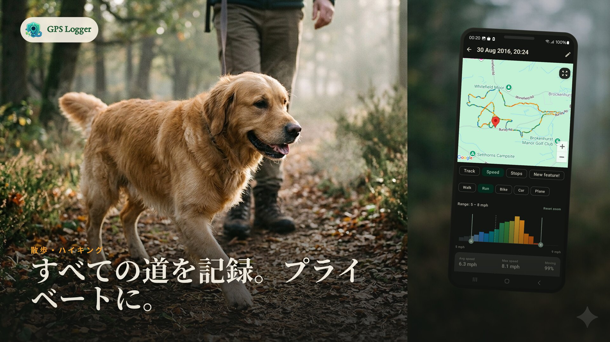
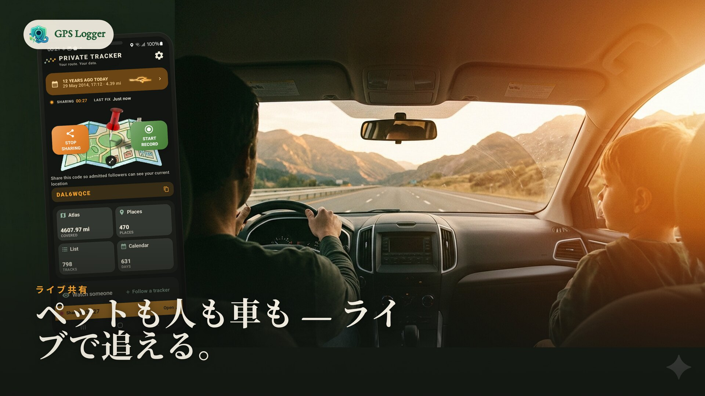
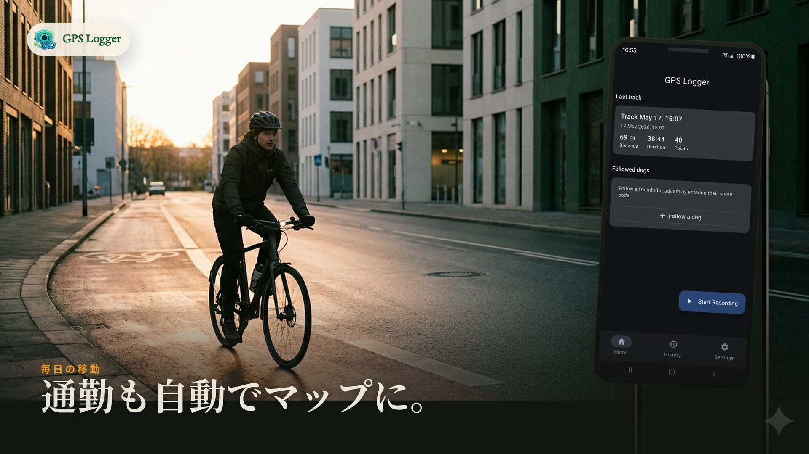
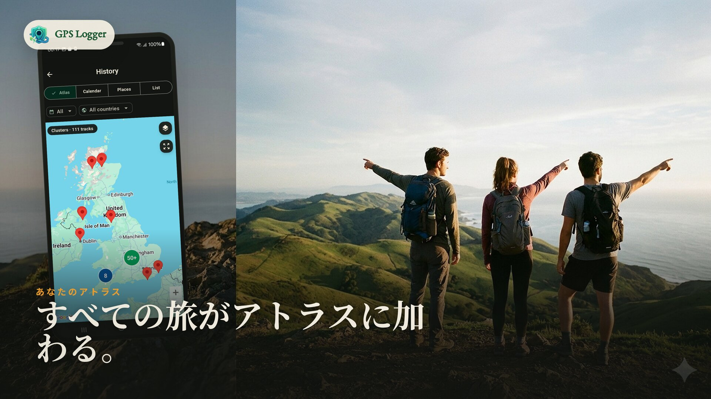
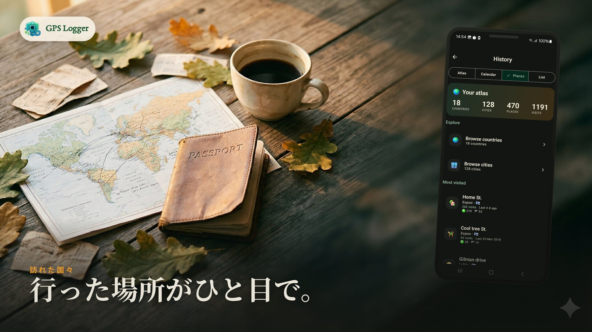
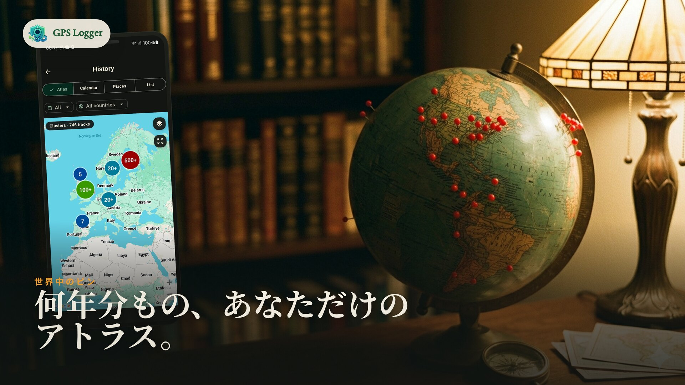
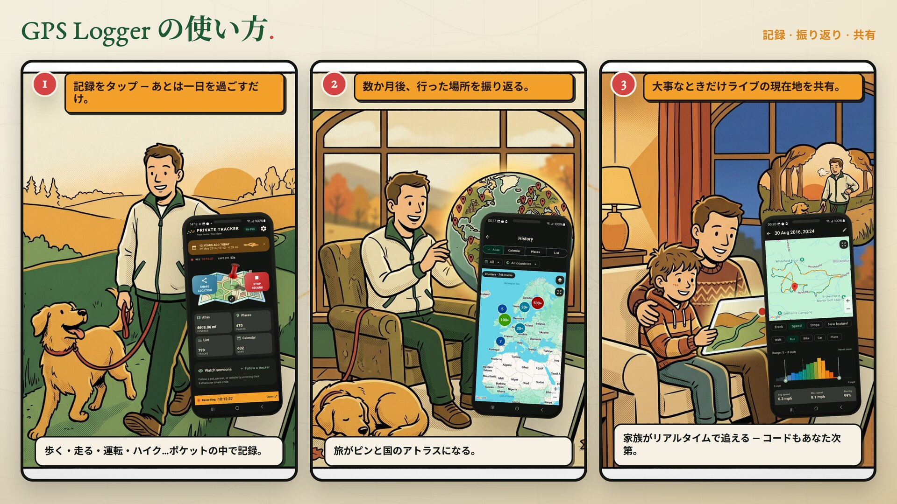

プライベートに記録
散歩、ハイキング、サイクリング、ドライブなど、あらゆる旅を記録。バックグラウンドで動作し、停止時にルート、距離、時間、速度を保存します。
プライベートGPS Logger · Google Timeline代替
散歩、ハイキング、サイクリング、ドライブを画面オフで記録。記録済みの日をタップすると、停止、移動、出来事をプライベートなタイムラインで見返せます。必要な時はGPX/KMLを書き出せます。

1日の記録
デバイス上で記録・保存され、あなたが選択しない限りデータが外部に出ることはありません。
すべての旅がライフタイム・マップ、カレンダー、そしてお気に入りの場所を構築します。
トラックごとのGPX・KML出力に加え、全履歴のZIPバックアップが可能。常に持ち運び自由です。
動きを検知するトラッキングでバッテリー消費を抑え、画面オフでも記録を続けます。
GPS Loggerが選ばれる理由






実際の動作を見る

仕組み

タップして出発。ポケットの中で一日中トラッキングします。
日をタップして、その日のルート、停止、移動、メモを確認します。
リセット可能なコードと設定した閲覧者数の上限で現在地を共有できます。
機能セット
散歩、ハイキング、サイクリング、ドライブなど、あらゆる旅を記録。バックグラウンドで動作し、停止時にルート、距離、時間、速度を保存します。
カレンダーの日をタップすると、歩行、移動、停止、出来事を時系列で地図と一緒に表示します。保存済みトラックから作られ、ファイルは変更しません。
これまでのルート全体の地図、記録した日のカレンダー、何度も訪れた場所、通過した国を確認できます。
リセット可能なコードと閲覧者数の上限（1〜20人）を設定して現在地を共有。保存されるのは最新の現在地のみで、停止後は削除されます。
個別のトラックをGPXやKMLで出力。または履歴全体をGPX ZIPとしてバックアップ。オープンな形式で、データはいつでもあなたのものです。
静止中はGPSの頻度を下げる適応的トラッキング。記録中はフォアグラウンド通知を表示し、再起動後の自動開始オプションも備えています。
記録にアカウントは不要。ルートはスマホ内に保存され、ライブ共有はオプトイン。共有コードのリセットやトラックの削除も自由に行えます。
実際のアプリ画面


GPSロギング・ガイド
Timeline
開始、停止、書き出し、端末保存を自分で管理できる日別ルートタイムラインを作れます。
チュートリアル
ルート記録、バックグラウンド追跡、GPX出力、全履歴バックアップのステップバイステップ。
プライバシー
スマホに残るデータ、現在地共有の仕組み、プライベートな旅のマップを維持する方法。
標高
ノイズのある高度、不自然なスパイク、獲得標高を地形データで整えます。
比較
プライベートな旅の日記か、トレーニング・ネットワークか、あるいは両方か。
ワークフロー
マッピング、GIS、旅行アーカイブ、ルート分析に役立つポータブルなデータの出力。
無料、Pro、ライフタイム
開始に必要なすべてが揃っています
月額または年額サブスクリプション
一括払い
GPS Loggerはフォアグラウンドサービスとして動作するため、画面がオフの時や他のアプリに切り替えた時も記録を継続します。適応的サンプリングでバッテリー消費を抑え、再起動時に自動で記録を再開するオプションも用意されています。
あなたがライブ共有やエクスポートを選択しない限り、ルートはスマホ内に留まります。ライブ共有では最新の現在地のみを保存し、停止後に削除します。マップ表示や診断には、プライバシーポリシーに記載されているサービスプロバイダーを使用します。
よくある質問
いいえ。記録はあなたが開始した時だけ始まり、停止した時に終わります。唯一の例外は、あなたが自身で有効にした場合の「再起動後の自動開始」です。
あなたのデバイス上です。あなたが現在地のライブ共有やファイルのエクスポートを選択しない限り、アップロードされることはありません。
リセット可能なコードを共有し、閲覧者数の上限（1〜20人）を選択します。コードを知っている人だけがライブマップ上であなたの現在地を確認できます。停止時に現在地は削除され、一定期間アクセスのない現在地も自動削除されます。
はい。個別のトラックをGPXやKMLで出力したり、全履歴をGPX ZIPとしてバックアップしたりできます。ロックイン（囲い込み）はありません。
はい。無料版には記録、アトラス、カレンダー、場所、最新10件のトラック、エクスポート、週1回のインポート、1日15分のライブ共有が含まれます。Proやライフタイムでは制限が解除されます。
はい。フォアグラウンドサービスによりバックグラウンドでも記録を続けます。長時間のセッションでは、Androidによって停止されないようアプリ内のバッテリー設定ガイドに従ってください。
次の散歩やドライブを記録して、あなたの人生のマップが埋まっていくのを眺めましょう。無料で開始でき、データはずっとあなたのものです。